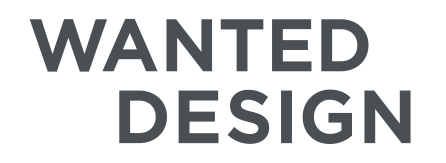
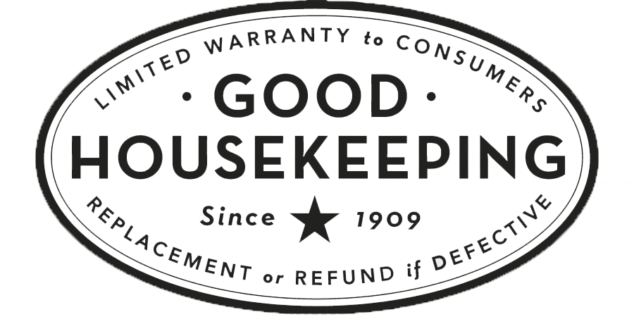

Professional Experience
Elle Decor
New Delhi, India
May - July, 2018
I was responsible for managing the onboarding of clients for Elle Décor’s Special Edition Design Diary. I assembled market research by surveying the decor market in Delhi. With a focus on scouting brands with sustainable agendas, I independently signed over 70% of clients for the special edition. I also wrote sales pitches for each brand that was featured in the final edition.

WantedDesign
Brooklyn, New York
May - July, 2019
WantedDesign is a platform dedicated to promoting design and fostering the international creative community. The events are held in New York during NYCxDESIGN. I interned with WantedDesign and create presentations for post exhibition programs used for advertising and briefs to investors. I was on the team that developed the 2019 theme “Conscious Design” to encourage zero waste in the production of exhibits. I also created content material for their exhibit in Paris, France.
Good Housekeeping Magazine
Manhattan, New York
January - April, 2019
As an intern in the Media and Tech Lab at the Good Housekeeping Institute, I assisted the Chief Technologist with market research, consumer testing, and product evaluation. I worked on a consumer story that involved researching product innovations in shower-heads as well as exploring trends in the toy industry. The whole process involved thorough investigation, analysis and constant review.
The Global and Leadership Foundation & Global Citizen India
Gurugram, Delhi NCR, India
January - July, 2017
In an effort to continue the successes of Global Citizen India, our team used social media platforms to communicate with citizens, continue to spread messages about Sustainable Development Goals and drive traffic to the website. We also collaborated with ‘Youth Reach’ to carry out educational programs in schools with a focus on cultivating ethical, altruistic leadership through collective action.


MidiTech
Gurugram, Delhi NCR, India
May - July, 2016
MidiTech is a production company which creates documentaries and programming for television. I worked in cinematography management and assisted the airing reality show episodes on and off set ensuring timely production.